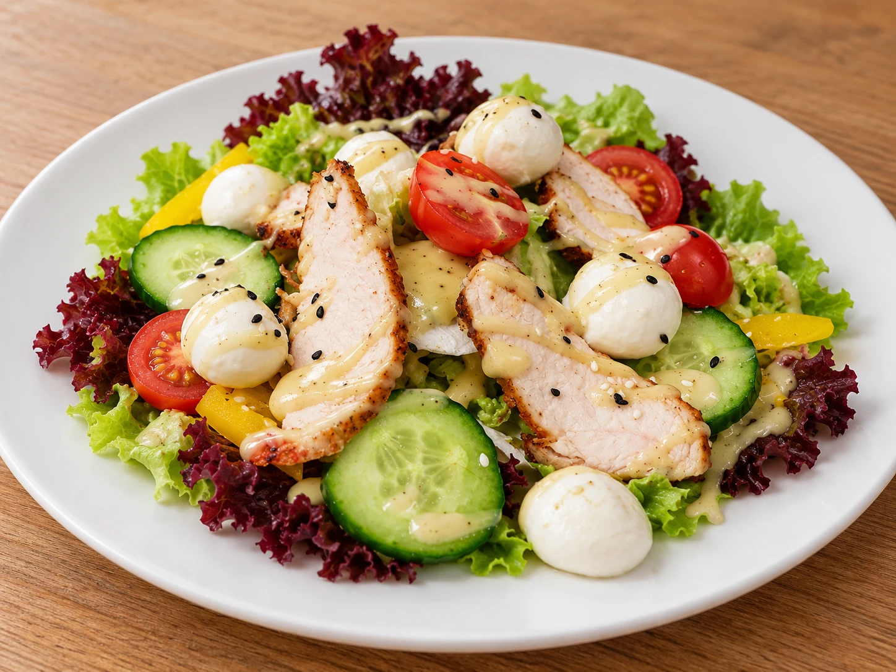
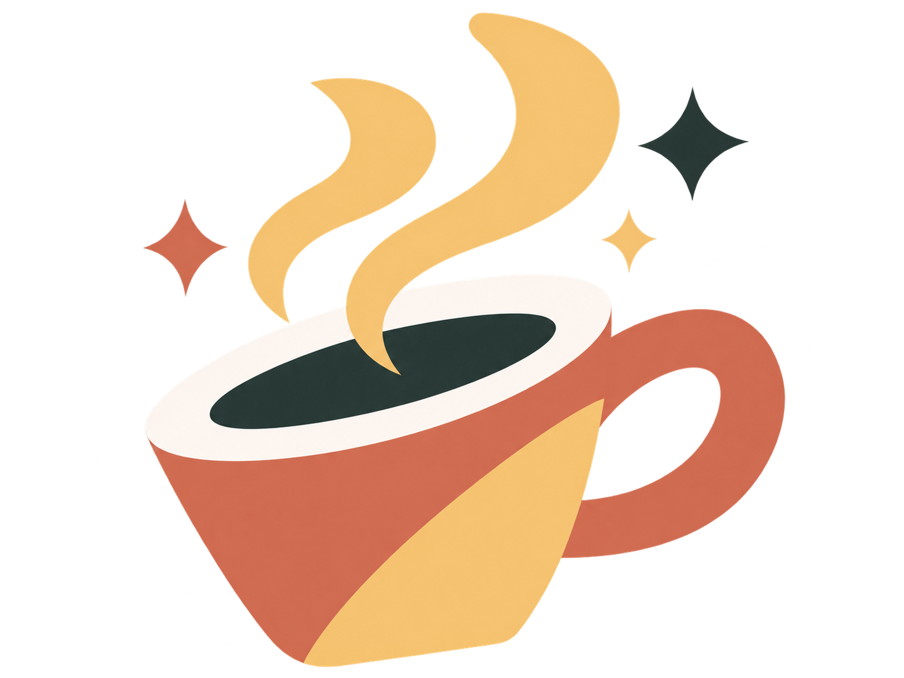

KAVINĖ · BARAS
Skirkite minutėlę skaniems pietums.
Siūlomi dienos pietūs! Jauki aplinka, skanus maistas, įvairus pasirinkimas - patiekalai, sriubos, salotos ir įvairūs gėrimai. Maistas išsinešimui.


Šiandien norisi šilto.
Sriuba, karštas patiekalas ar gaivios salotos - pavalgyti vietoje arba pasiimti su savimi.
IŠ ARČIAU